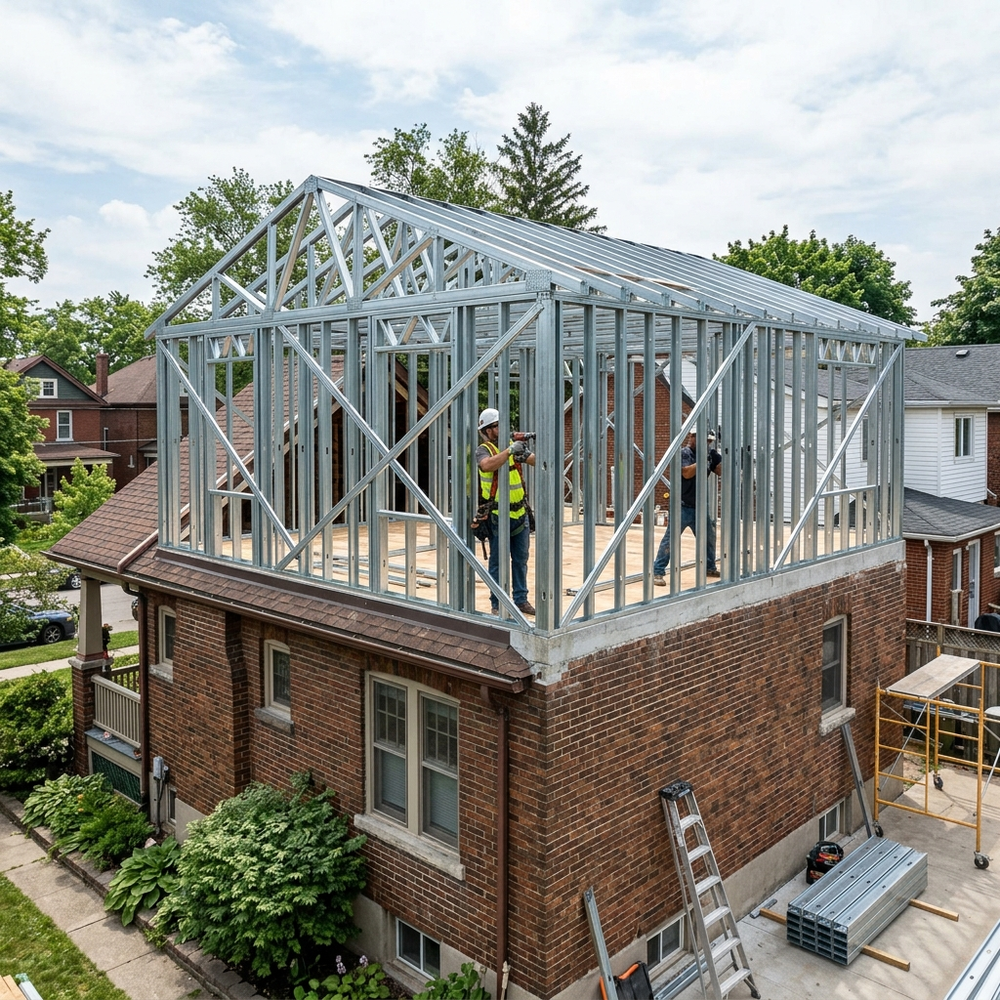
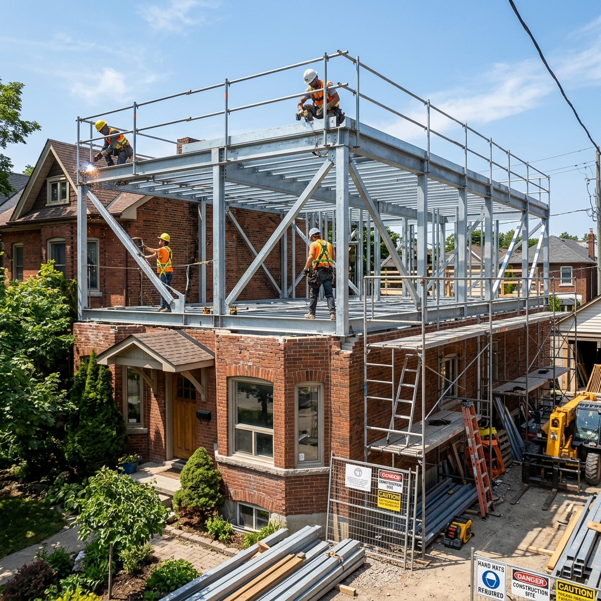

Ampliación en Planta Alta con Steel Framing
La ampliación en planta alta con Steel Framing en Tucumán es la solución más segura y recomendada debido a su ligereza estructural: el sistema pesa hasta un 75% menos que la mampostería tradicional, evitando sobrecargar los cimientos existentes. Constructora ByB ejecuta ampliaciones limpias entregadas en menos de 45 días.
Para planificar correctamente una obra residencial en la provincia de Tucumán, el análisis de las opciones disponibles y su estructura técnica es clave. A continuación, te presentamos un panel de comparación interactivo y las especificaciones técnicas completas para que elijas con total seguridad.
Panel Interactivo de Decisión
Selecciona un criterio de comparación para ver el rendimiento:
-
-
Tabla Comparativa de Soluciones
| Criterio de Evaluación | Ampliación con Steel Framing (ByB) | Ampliación con Mampostería Tradicional |
|---|---|---|
| Peso por M² de Muro | Aprox. 45 kg / m² (Ultraliviano) | Aprox. 220 kg / m² (Exige refuerzos) |
| Plazo de Ejecución | 3 a 5 Semanas (En seco) | 12 a 16 Semanas (Húmedo lento) |
| Humedad e Impacto en Planta Baja | Nulo (Instalación limpia) | Alto (Mezclas, apuntalamiento, roturas) |
| Aislamiento Acústico en Losa | Alto (Paneles con lana mineral) | Básico |
Cómo Ampliar Arriba sin Comprometer la Planta Baja
El gran desafío al construir una planta alta sobre una casa existente es el peso. Levantar paredes de ladrillo común y vigas de hormigón sobre cimientos antiguos exige casi siempre realizar costosos refuerzos estructurales en la planta baja, rompiendo paredes habitadas.
El Steel Framing utiliza perfiles de acero galvanizado livianos de alta resistencia. Al pesar solo una fracción del ladrillo, se puede instalar directamente sobre la losa existente previa verificación de carga, acelerando la entrega a semanas y sin generar humedad ni filtraciones abajo.

Perfiles de Alternativas del Sector
Constructora ByB
Estructuras de ampliación livianas diseñadas a medida en Steel Framing con cálculo de estructura CIRSOC y plazos garantizados.
- check_circleInstalación limpia sin humedad
- check_circleART y directores de obra matriculados
- check_circleGarantía por contrato de 10 años
Empresas Tradicionales
Constructoras que insisten en picar los cimientos de tu casa actual para levantar columnas de ladrillo comunes.
- check_circlePlazos lentos de 4 meses
- check_circlePolvo y escombros en planta baja
- check_circleRiesgo de rajadura de revoques
Albañiles particulares
Contratación informal por jornal para levantar muros arriba sin calcular si la losa o cimientos actuales resistirán el peso.
- check_circleSin planos de ingeniería estructural
- check_circlePeligro de colapso de losa
- check_circleSin garantías formales de obra
Preguntas Frecuentes Relacionadas
Se realiza un anclaje mecánico y químico de alta resistencia. Colocamos una solera inferior de acero fijada con pernos de expansión o anclajes químicos directamente a la losa de hormigón armado existente, asegurando que los perfiles estructurales de planta alta transmitan las cargas de viento y peso de forma uniforme.
Sí. El gran beneficio es la colocación de aislamiento multicapa en el piso de la planta alta y en los muros divisorios. Al rellenar los perfiles con lana de vidrio de alta densidad o placas de lana de roca volcánica, amortiguamos el ruido de pisadas y la transmisión de sonidos aéreos hacia la planta baja.
Sí, la Municipalidad de Yerba Buena y San Miguel de Tucumán exigen la presentación de planos de ampliación aprobados y la firma de profesionales responsables. ByB te provee de toda la documentación técnica de planos y cálculo de estructura sismorresistente listos para presentar en el expediente.
¿Listo para hacer realidad tu proyecto de vivienda?
Obtenga un presupuesto cerrado llave en mano, con plazos de entrega garantizados por contrato y calidad premium certificada bajo normas sismorresistentes.